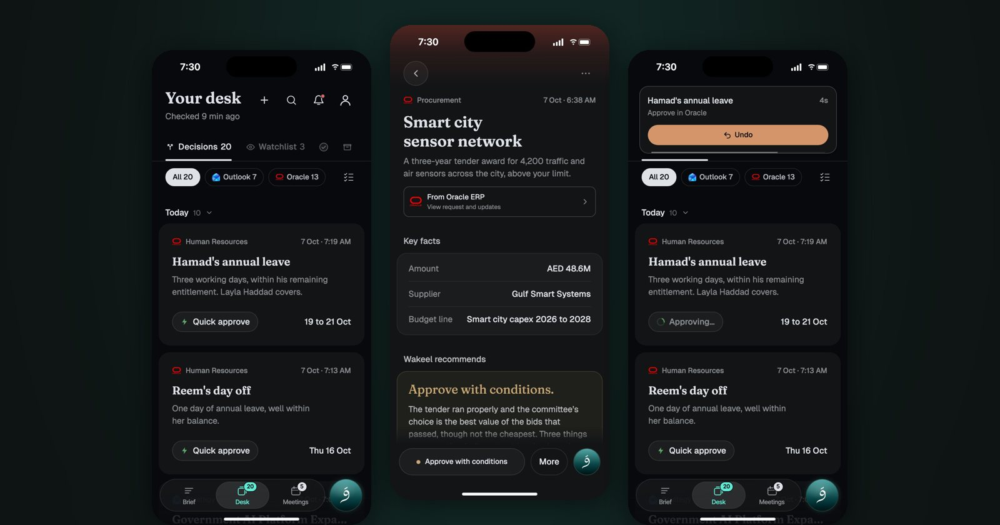
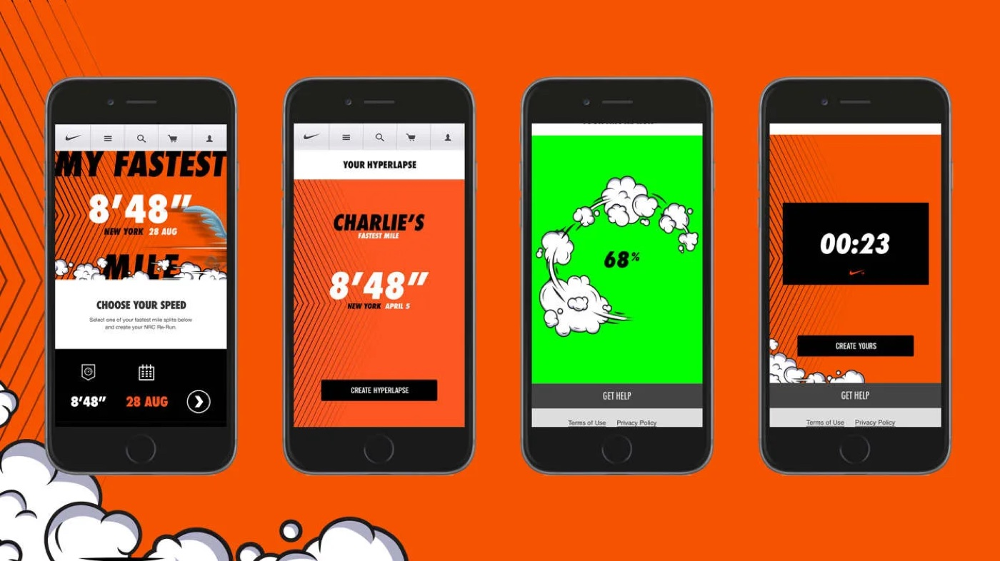
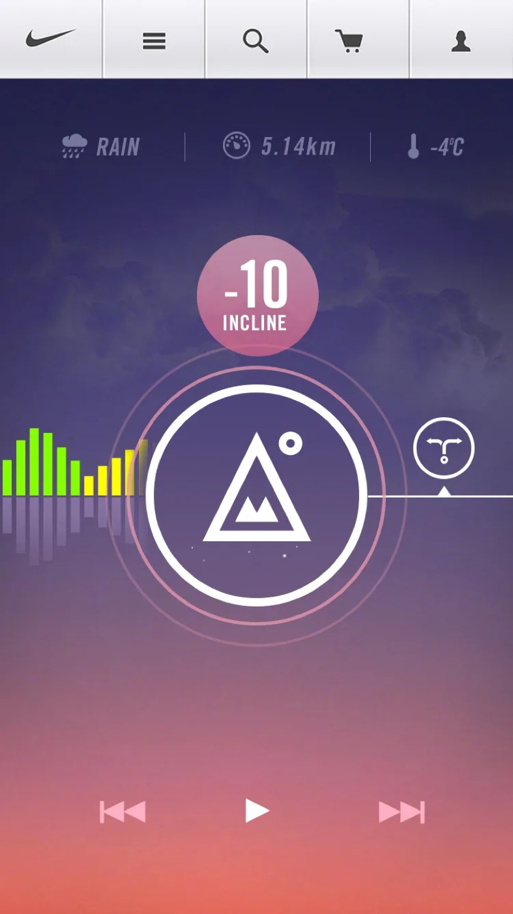
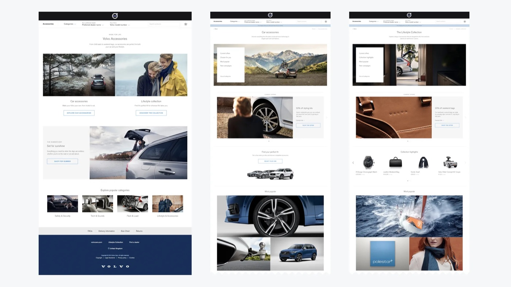
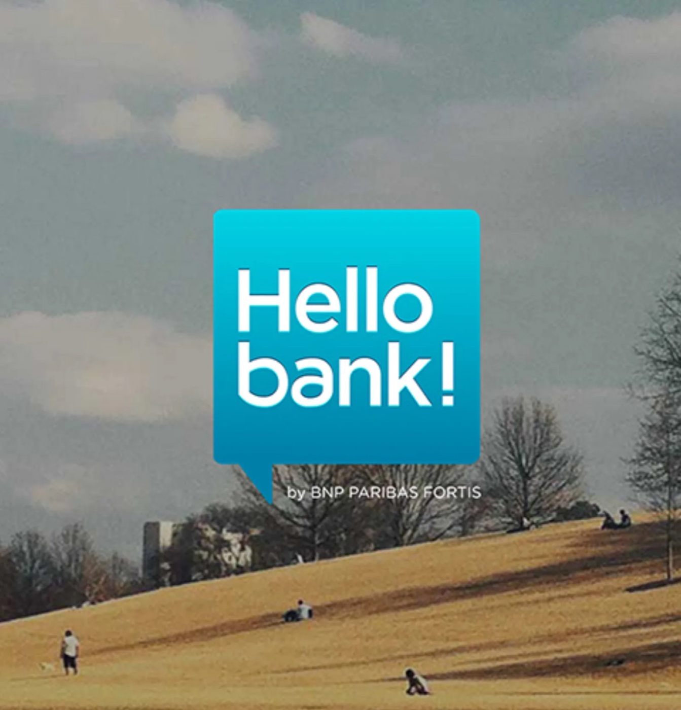
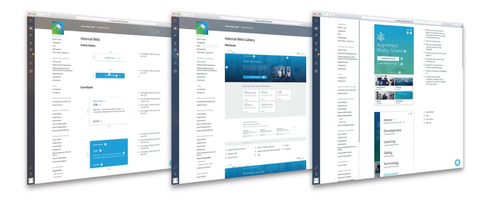
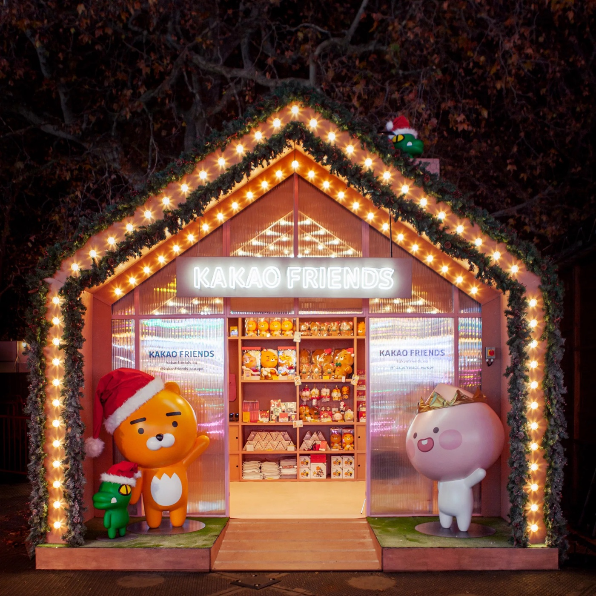
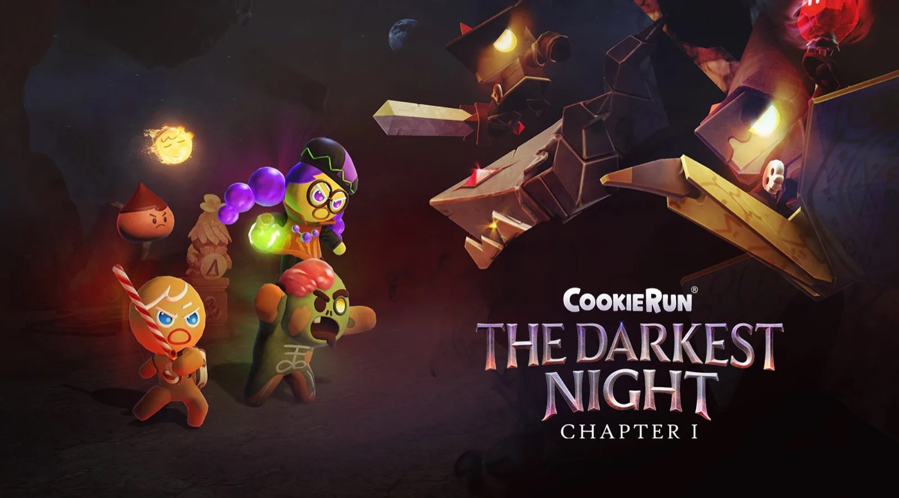

컬리 프로덕트 디자인 리드 지원 포트폴리오
복잡한 것은 쉽게,
돈 앞에서는 정직하게,
판단은 숫자로.
사용자가 돈과 신뢰를 맡기는 화면을 설계합니다. 런던에서 Nike, Barclays, BNP Paribas, Volvo의 디지털 경험을 만들었고, 사우디아람코의 전사 디자인 시스템을 세웠고, 카카오의 첫 유럽 법인, 데브시스터즈의 VR 사업, 사우디 국가 AI 플랫폼 Humain One의 경험 디자인 팀을 처음부터 꾸려 이끌었습니다. 지금은 아부다비 정부의 AI 제품 경험을 이끌고, 제 스튜디오에서는 숫자를 보며 제품을 만듭니다.
- 지금
- 아부다비 정부 DGE, Product Experience Lead
(2026년 8월부터), Raymind.AI 창업자 - 이전
- Humain, 데브시스터즈, 카카오IX 영국법인,
사우디아람코 - 학력
- Goldsmiths 석사,
Central Saint Martins 학사
함께 일한 곳NikeVolvoBarclaysVirgin AtlanticBNP ParibasSaudi AramcoKakaoDevsistersHumainAbu Dhabi DGE
컬리의 구매 여정과 디자인 조직에 필요한 일을, 직접 해 왔습니다.
- 01
구매 흐름은 숫자로 판단합니다
팔도사주에서 광고로 들어온 사용자의 퍼널을 단계별로 측정하고, 가장 크게 새는 결제 버튼 클릭에 실험을 모았습니다. 팔린 적 없는 정가에 취소선을 그은 표시를 걷어 내자 결제 화면 방문자 1명당 매출이 61% 올랐고, 결제 직후 추가 구매 제안을 20분에서 24시간으로 늘려 24시간 안 추가 구매를
팔도사주15.8%에서 20.0%로 올렸습니다. - 02
디자인 조직은 기준으로 이끕니다
사우디아람코에서 12명 UX 팀을 이끌며 전사 디자인 시스템과 UX 가이드라인을 세웠고, Humain One에서는 6명 경험 디자인 팀을 처음부터 꾸려 경험 원칙과 디자인 리뷰 체계를 세웠습니다. 리뷰가 취향 싸움이 아니라 합의한 기준에 따른 판단이 되게 합니다.
조직과 팀에서 - 03
AI로 디자인 과정을 바꿔 왔습니다
Wakeel에서는 제가 방향과 기준을 정하면 에이전트가 실제 앱 코드 위에 시안을 만들고, 제 디자인 코멘트 82건이 모두 고친 화면으로
Wakeel 03돌아왔습니다(중앙값 10분). 페이지 위에 남긴 피드백이 그 페이지를 만든 에이전트에게 바로 가는 리뷰 도구도 직접 만들어 씁니다. - 04
복잡한 업무도, 여러 플랫폼도 한 경험으로
고위 의사결정자에게 오는 Oracle ERP 결재와 Outlook 결정 요청을 Wakeel의 한 화면에 모으고, 결재의 무게에 맞춰 추천을 얼마나 자세히 보여 줄지 나눴습니다. memory.wiki에서는 디자인 토큰 하나에서 웹, Mac, iPhone, Android의 코드가 나오게 해, 모든 플랫폼이 같은 색과 글자를 쓰게 했습니다.
memory.wiki 03 - 05
돈 앞에서는 정직하게
TarotMasters의 결제 화면에 카카오페이, 네이버페이, 카드를 나란히 두어 결제 완료율을
이전 작업54%에서 80%로 올렸습니다. 결제 전에 무엇을 받는지와 얼마인지를 한 화면에 보여 주고, 팔린 적 없는 가격은 비교 가격으로 쓰지 않습니다. 런던에서는 Barclays 모기지와 Volvo의 첫 자체 이커머스 웹숍 UX를 이끌었습니다.
돈 앞에서는 믿게 하고, 복잡한 일은 쉽게.
팔도사주는 탐색부터 결제와 재구매까지 숫자를 보며 고친 흐름, Wakeel은 여러 시스템의 업무를 한 화면에 모은 경험과 AI와 함께 바꾼 디자인 과정, memory.wiki는 토큰 하나로 묶은 여러 플랫폼입니다. 채팅 제품은 나를 기억하고 여럿이 함께 들어 주는, 대화가 곧 제품인 AI 서비스 두 개입니다.
팔도사주돈을 내기 전에 믿게 만드는 결제 흐름
AI 사주 마스터가 사연을 먼저 듣고 풀어 주는 상담. 1인 개발로 만들고, AI 에이전트 30여 개가 운영을 분담합니다. 출시 첫 3주 동안 퍼널을 단계별로 측정하고, 결제 화면을 A/B 테스트로 고쳤습니다.

Wakeel결재의 무게에 맞춘 AI 의사결정 경험
아부다비 정부 고위 의사결정자의 결재를 AI가 먼저 읽고 추천하는 앱. 경험 설계를 이끌며 결재의 무게에 맞춘 결정 흐름과 Wakeel의 얼굴인 오브를 설계했고, AI 에이전트 팀과 실제 앱 코드로 시안을 만들어 몇 분 단위로 다듬었습니다.

memory.wikiAI가 바뀌어도 맥락은 그대로
어떤 AI를 쓰든 내 자료와 맥락을 그대로 넘겨주는 지식 저장소. 혼자 기획하고 만들어 웹, Mac, iPhone, Android 앱, 확장 셋, CLI, MCP 서버까지 아홉 개 플랫폼에 출시했습니다.
채팅 제품IsekaiPlay와 토끼이모의 수다분식
거의 모든 일이 채팅 안에서 이뤄지는 AI 서비스 두 개를 혼자 기획하고 Claude Code로 만들었습니다. IsekaiPlay에서는 AI 캐릭터가 플레이어를 기억하고 플레이어에게 집중하게 했고, 토끼이모에서는 여러 캐릭터가 한 사람의 이야기를 함께 듣는 단체 대화와 음성 대화를 설계했습니다.
작게 만들고, 숫자로 판정하고, 기록으로 쌓습니다.
개선 과정의 여섯 단계, UX 원칙, AI와 함께 디자인하는 법, 조직과 팀에서 해 온 일.
읽기컬리가 찾는 것과 제가 해 온 것
10년 이상 UX와 프로덕트 디자인, 10명 이상 디자인 조직 리드
런던 AKQA와 Razorfish에서 Nike, Volvo, Barclays, BNP Paribas의 UX를 이끌었습니다. 사우디아람코에서는 12명 UX 팀을 이끌며 전사 디자인 시스템을 세웠고, 데브시스터즈에서는 프로덕트, 엔지니어링, 아트, 마케팅이 섞인 25명 팀을 꾸려 출시까지 이끌었습니다.
조직과 팀에서이커머스, 플랫폼, 테크 기업의 프로덕트 디자인
Volvo의 첫 자체 이커머스 파일럿
디자이너 육성과 리뷰 체계
사우디아람코의 12명 UX 팀과 Humain One의 6명 경험 디자인 팀을 이끌었습니다. Humain One에서는 경험 원칙과 리뷰 체계를 처음부터 세웠습니다. 리뷰가 취향 싸움이 아니라 합의한 기준에 따른 판단이 되게 합니다.
UX 원칙탐색, 발견, 구매, 재구매 여정
팔도사주에서 광고로 온 사용자의 퍼널을 단계별로 측정했습니다. 앞 단계에서 넘어온 비율이 생일 입력 59%, 풀이 목차 92%, 결제 화면 57%, 결제 버튼 클릭 13%, 결제 완료
정성, 정량 리서치와 A/B 테스트
실험마다 핵심 지표와 가드레일, 판정 날짜와 중단 기준을 먼저 적고 시작합니다. 팔도사주 결제 흐름 실험 8개 중 6개를 남기고 2개를 되돌렸습니다. Wakeel에서는 리뷰 노트를 받아 적지 않고 그 뒤에 있는 사용자 요구를 읽어, 첫 리뷰를 네 가지 요구와 과제 9개로 나눴습니다.
팔도사주 03디자인 시스템 구축과 거버넌스
사우디아람코 전사 디자인 시스템과 UX 가이드라인을 여러 사업부에 적용했고, Humain One의 디자인 시스템을 Figma로 운영했습니다. memory.wiki에서는 네 곳에 손으로 따로 적던 색이 어긋나 Android에서 고른 색이 저장되지 않던 문제를 보고, 토큰 하나에서 웹, Mac, iPhone, Android의 코드가 나오게 했습니다.
memory.wiki 03AI 기반 디자인 도구로 과정 혁신
Wakeel에서는 리뷰 세 번에 걸쳐 실제 앱 코드 위에 시안 94개를 만들었고, 제 디자인 코멘트 82건이 모두 고친 화면으로
우대: B2C와 B2B, 핀테크, 풀필먼트
B2C는 Nike, Volvo와 제가 운영하는 서비스이고, B2B는 고위 의사결정자의 결재와 요청을 다루는 아부다비 정부의 AI 업무 제품입니다. 핀테크는 런던의 Barclays 모기지 경험과, TarotMasters에서 결제 완료율을
우대: 급성장 환경에서 조직을 처음부터
세 팀을 처음부터 꾸렸습니다. 카카오의 첫 유럽
Raymind.AI에서 만들어 운영하는 제품들
AI에서 생산성 말고 가장 중요한 쓰임은, AI의 기본인 대화로 사람의 고민을 듣는 일이라고 생각합니다. 팔도사주, TarotMasters, PastLife는 점술 앱이 아니라 사주, 타로, 전생이라는 좁은 주제에서 시작해 고민을 구체적으로 듣는 서로 다른 접근입니다. 어떤 고민이 많고 어떤 답에 마음이 열리는지를 데이터로 쌓아, 다음 단계로 토끼이모를 만들었습니다.
memory.wiki
AI와 나눈 대화와 문서를 주소 하나로 모아, 어떤 AI에게든 맥락으로 넘깁니다. 웹, Mac, iPhone, Android 앱, 브라우저와 VS Code 확장, CLI, MCP 서버까지 혼자 만들었습니다.
memory.wiki팔도사주
사주라는 좁은 주제에서 시작해, 팔도의 마스터 캐릭터가 고민을 먼저 듣고 대화로 풀어 주는 AI 상담. 결제 화면을 숫자를 보며 고쳐 결제 화면 방문자 1명당 매출을 61% 올렸습니다.
paldosaju.com토끼이모의 수다분식베타 출시
토끼이모와 단골 캐릭터들이 한 사람의 이야기를 함께 들어 주는 대화 서비스입니다. 팔도사주와 TarotMasters에서 사람들이 실제로 털어놓은 고민을 보며 배운 것을 바탕으로 만들었고, 사주나 타로 없이 고민 그 자체에서 시작합니다.
tokkiimo.com그 밖에 tarotmasters.app, pastlife.app, 게임 플랫폼 dopaplay.io, isekaiplay.com, screenstyler.ai를 운영하고 있습니다. 전체는 raymind.ai에 있습니다.
금융, 커머스, 스포츠, 엔터테인먼트에서 해 온 일

ReRun
러닝 기록에서 가장 빠른 1마일을, 실제 달린 길의 거리 사진을 이어 하이퍼랩스 영상으로 만들었습니다. 16개국에 출시. UX와 UI 리드.

RunTrack
달리기

Global Webshop
볼보의 첫 자체 이커머스

Hello Bank! 전문가 리뷰
모바일 은행 Hello

전사 디자인 시스템
전사 디자인 시스템과 UX 가이드라인을 만들어 여러 사업부에 적용. 사우디 여성의 첫 운전면허 취득을 돕는 디지털 여정.

카카오프렌즈 유럽
카카오의 첫 유럽 법인. 카카오톡과 카카오프렌즈를 유럽에 소개하고, 라이선스와 리테일 파트너십, Winter Wonderland 팝업을 진행.

쿠키런 VR
제안, 팀 구성, Meta 파트너십부터 Meta Quest Store 출시까지. 6개월 만에 프로토타입.
Nike Training Club, Barclays, Virgin Atlantic
Nike(NRC, NTC) 앱의 온보딩과 AI 추천, Barclays 모기지 경험, Virgin Atlantic 예약 경험의 UX를 이끌었습니다.